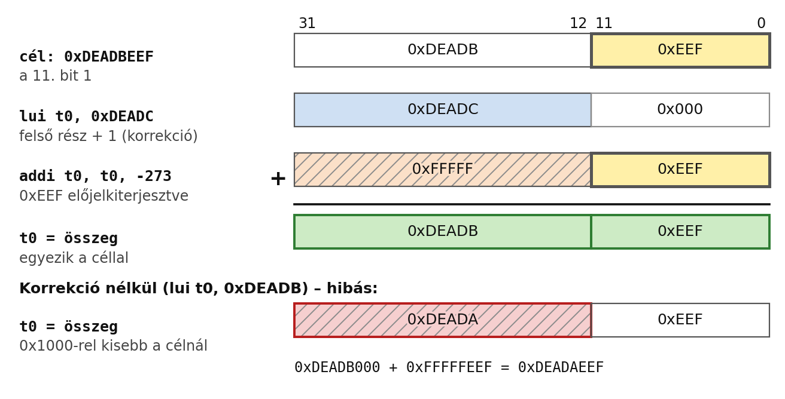

Egy saxpy-szerű ciklusban ez az egyetlen C-sor áll:
y[i] = x[i] - x[i-1] + 0x1234ABCD;. RV32I-re kézzel
fordítva tíz utasítás lesz belőle. Ebből csak három végzi azt, amit a
sor „mond” (egy kivonás, egy összeadás és egy tárolás), a többi a
tömbelemek címét állítja elő, betölti az értékeket, és
összerakja a 32 bites állandót, mert az nem fér el egyetlen utasításban.
Ha a ciklus tízmilliószor fut, ez százmillió utasítás; a Végrehajtási idő, CPI és a vasegyenlet
tényezője itt dől el.
Ebben az alfejezetben megtanuljuk, milyen számolási, eltolási, összehasonlító és memóriautasítások állnak rendelkezésre, hogyan számol egy tömbelem címe, hogyan töltünk be tetszőleges állandót, és miért nincs a RISC-V-ben jelzőbit-regiszter.
Képzeljük el a processzort kis műhelynek. A munkapad a 32 regiszter,
a raktár a memória. A számolóegység (ALU, shifter,
szorzás és osztás) csak a munkapadon lévő dolgokkal (és az
utasításba írt kis állandókkal) tud dolgozni. A raktárból csak a
load hoz anyagot, vissza csak a store visz. A
raktárban egy polc helyét mindig ugyanúgy adjuk meg: egy regiszterben
lévő báziscím plusz egy rövid, állandó
eltolás. Tömbnél a bázist mi számoljuk ki az indexből;
struktúránál a bázis a struktúra eleje, az eltolás a mező helye; helyi
változónál a bázis a veremmutató.
Az interaktív ábra ezt a lépéssort mutatja: válassz elemtípust és
indexet, és nézd meg, hogyan lesz az indexből cím, a címből a betöltő
utasítás mezőiben kódolt művelet, a memóriában tárolt bájtokból pedig 32
bites regiszterérték. Figyeld meg az ábrán, hogy az
int16_t a[8] tömb a[6] eleme a
0x1000C címen kezdődik, a két bájt fordított sorrendben
olvasandó (CD, AB → 0xABCD), és
mivel a legfelső bitje 1, a regiszter felső 16 bitje csupa 1 lesz.
int16_t)Minden művelet legfeljebb két forrásból egy célregiszterbe ír. Két alakja van: R formátumú, ahol a második operandus regiszter, és I formátumú, ahol 12 bites, előjeles közvetlen érték. A táblázatban és a két operandus.
| Művelet | R alak | I alak | Eredmény |
|---|---|---|---|
| összeadás, kivonás | add, sub |
addi |
, illetve modulo |
| bitenkénti logika | and, or, xor |
andi, ori, xori |
bitenként |
| eltolás balra | sll |
slli |
eltolva balra, jobbról nullák |
| logikai eltolás jobbra | srl |
srli |
jobbra, balról nullák |
| aritmetikai eltolás jobbra | sra |
srai |
jobbra, balról az előjelbit másolata |
| összehasonlítás (előjeles) | slt |
slti |
1, ha , különben 0 |
| összehasonlítás (előjel nélküli) | sltu |
sltiu |
ugyanaz, előjel nélküli értékekre |
A táblázatból négy dolgot érdemes megjegyezni.
subi: állandó kivonása
addi negatív értékkel: addi t0, t0, -4.andi t0, t0, -1
ezért semmit sem változtat, a xori t0, t1, -1 pedig a
bitenkénti negáció (ez a not pszeudoutasítás). Az
andi t0, t0, 0xFFF viszont hiba, mert 4095 nem fér az
előjeles tartományba.sltiu rd, rs, 1 pontosan akkor ad 1-et, ha
rs = 0 (seqz).A slli t0, t1, 2 négyszerezés, ezért tömbindexnél a
mul helyett ezt használjuk. A jobbra tolás osztás kettő
hatványával, de az előjeles esetben lefelé kerekít: a
srai-jal egyet tolva
,
míg a C -7 / 2 kifejezés (nulla felé kerekítve)
.
A fordító ezért előjeles osztásnál korrekciót is beszúr: negatív
osztandóhoz előbb hozzáadja az srli által kinyert
előjelbitet.
Az ALU, shifter, szorzás és osztás alfejezet
ALU-ja a nulla, negatív, átvitel és túlcsordulás jelzőket is előállítja.
Az x86-64 és az AArch64 ezeket külön jelzőregiszterben tárolja, a RISC-V
nem. Az összehasonlítás eredménye közönséges
regiszterbe kerül (slt, sltu), a feltételes
elágazás pedig maga hasonlít össze két regisztert. Így nincs rejtett,
minden utasítás által módosított közös állapot, amelyet egy párhuzamosan
végrehajtó processzornak külön kellene követnie.
Az átvitel visszanyerhető: az előjel nélküli összeadás pontosan akkor csordult túl, ha az eredmény kisebb valamelyik operandusnál. Így épül egy 64 bites összeadás 32 bites regiszterekből:
add a0, a0, a2 # alsó félszó
sltu t0, a0, a2 # átvitel: 1, ha az összeg kisebb az egyik tagnál
add a1, a1, a3 # felső félszó
add a1, a1, t0 # + átvitelDefiníció. A betöltés és tárolás effektív címe
ahol a 12 bites közvetlen érték előjelkiterjesztése. Szóban: egy regiszter tartalma plusz egy és közötti állandó.
| Utasítás | Méret | Mit ír a regiszterbe |
|---|---|---|
lw |
4 bájt | a teljes 32 bit |
lh / lhu |
2 bájt | előjel- / nullakiterjesztett érték |
lb / lbu |
1 bájt | előjel- / nullakiterjesztett érték |
sw, sh, sb |
4, 2, 1 bájt | a regiszter alsó 32, 16, 8 bitjét tárolja |
A betöltésnél a típus dönti el, melyiket kell választani:
int8_t esetén lb, uint8_t esetén
lbu. A tárolásnál nincs előjel nélküli változat, mert a
levágott alsó bitek mindkét esetben ugyanazok. A többbájtos érték
little-endian sorrendben áll a memóriában, és a természetes módon
igazított cím (2 bájthoz páros, 4 bájthoz néggyel osztható) a
biztonságos választás. A specifikáció szerint az igazítatlan hozzáférés
vagy működik, vagy csapdát (trap) vált ki, ez a végrehajtó környezettől
függ; a könyv értelmezője csapdát jelez.
Továbbvitt eredmény. A címszámítás bázis+eltolással:
cím = x[rs1] + előjelkiterjesztett 12 bites eltolás, minden
betöltés és tárolás így címez. Erre épít a Kódolás
bitszinten és egy RISC-V-értelmező (a mezők kivágása), Az adatút elemei és összeállítása (a címet az ALU
számolja) és a Cache-szervezés: leképezés és
címbontás (a kiszámolt címet bontja címkére, indexre és
eltolásra).
Egy
bájtos elemű tömb
-edik
elemének címe bázis + i·s. Ha
kettő hatványa, a szorzás eltolás:
slli t0, a2, 2 # t0 = 4*i (int32_t, a2 = i)
add t0, a0, t0 # t0 = &x[i] (a0 = x)
lw t1, 0(t0) # t1 = x[i]
lw t2, -4(t0) # t2 = x[i-1] (ugyanaz a bázis, más eltolás)Ha az index fordítási időben ismert, elég egyetlen utasítás:
lw t1, 12(a0) a negyedik elem. Struktúránál ugyanez a
minta: a p->y mező a p mutató plusz a mező
eltolása. Ciklusban sokszor jobb a mutatót léptetni
(addi a0, a0, 4), mint minden körben újraszámolni a címet;
a sum kernel pontosan így dolgozik. Ha az eltolás kilép a
KiB tartományból, előbb regiszterbe kell számolni a címet.
A 32 bites állandó nem fér el egy 12 bites mezőben. A
lui rd, imm20 (load upper immediate) a közvetlen értéket a
felső 20 bitre teszi, az alsó 12 bit nulla. Egy addi utána
hozzáadja az alsó részt:
A csapda az előjelkiterjesztés: ha az alsó 12 bit legfelső bitje (a
11. bit) 1, az addi negatív számot ad
hozzá. Ilyenkor a felső részt előre eggyel növelni kell. Tömören:
A pontosan akkor viszi át az egyest a felső részbe, ha .

0xDEADBEEF konstans felbontása lui és addi
utasításra, a +0x800 korrekcióvalAz ábrán figyeld meg a második és harmadik sort: a lui
felső része 0xDEADC, eggyel nagyobb a célénál, az
addi előjelkiterjesztett tagjának felső része pedig
0xFFFFF, vagyis
;
a kettő kioltja egymást. Az assembler li pszeudoutasítása
mindezt elvégzi helyettünk.
Az auipc rd, imm20 (add upper immediate to pc) a
pc + (imm20 << 12) értéket írja rd-be.
Ebből és egy addi-ból lesz a la
pszeudoutasítás, amely egy címke címét a program aktuális helyéhez
viszonyítva számolja ki; így a kód a memória bármely helyére tölthető
(pozíciófüggetlen).
| Utasítás | Eredmény |
|---|---|
mul |
a 64 bites szorzat alsó 32 bitje |
mulh, mulhu, mulhsu |
a felső 32 bit (előjeles, előjel nélküli, vegyes operandusokra) |
div, divu |
hányados, nulla felé kerekítve |
rem, remu |
maradék, előjele az osztandóé |
A szorzat alsó fele előjeltől független, ezért egyetlen
mul van. Az osztás soha nem vált ki
kivételt: nullával osztva a hányados csupa 1 bit
(,
illetve
),
a maradék maga az osztandó; a
túlcsordulásnál a hányados
,
a maradék 0 [S-RISCV-ISA]. A C-ben a nullával osztás nem definiált
viselkedés, ezért a programnak, nem a hardvernek kell ellenőriznie. Ezek
a műveletek több órajelciklusig tartanak (ALU,
shifter, szorzás és osztás).
t-regiszterekbe.x[i] → slli + add +
lw; kettő-hatvány szorzás → eltolás.li (lui +
addi).int8_t → lb,
uint16_t → lhu.Továbbvitt eredmény. A kézi fordítás mintái
(kifejezés → regiszterek, tömbelem → eltolás, összeadás és betöltés,
nagy állandó → lui + addi) a Vezérlésátadás: elágazás, ugrás, ciklus, switch, a
Hívási konvenció, verem és veremkeret és A fordító kimenete: C-ből assembly
kiindulópontja.
Fordítsuk le a Motiváció sorát:
y[i] = x[i] - x[i-1] + 0x1234ABCD;, ahol a0 =
x, a1 = y, a2 =
i, és x = {100, 130, 90, 70},
.
1. lépés: cím. A slli t0, a2, 2 után
.
Az add t1, a0, t0 után
(az x tömb a 0x10000 címen kezdődik).
2. lépés: betöltés. Az lw t2, 0(t1) az
értéket, az lw t3, -4(t1) az
értéket hozza.
3. lépés: kivonás. sub t2, t2, t3 →
,
bitmintaként 0xFFFFFFD8.
4. lépés: állandó. 0x1234ABCD alsó 12
bitje 0xBCD, a 11. bit 1, tehát korrigálunk:
,
.
Így lui t4, 0x1234B → 0x1234B000, majd
addi t4, t4, -1075 → 0x1234ABCD.
5. lépés: összeadás és tárolás.
add t2, t2, t4 →
.
Az y címe 16 bájttal az x után van,
0x10010; az add t5, a1, t0 után
,
ide tárol az sw t2, 0(t5).
Összesen tíz utasítás: kettő címszámítás az x-hez, kettő
betöltés, egy kivonás, kettő az állandó, egy összeadás, egy címszámítás
az y-hoz és egy tárolás.
Futtassuk le a fordítást, és kövessük a nyomot (a nyom elején álló
la és li sorokat kihagyjuk).
import sys; sys.path.insert(0, "code")
from archkit import bits, riscv, trace
src = """
.data
x: .word 100, 130, 90, 70
y: .zero 16
.text
la a0, x
la a1, y
li a2, 2
slli t0, a2, 2
add t1, a0, t0
lw t2, 0(t1)
lw t3, -4(t1)
sub t2, t2, t3
lui t4, 0x1234B
addi t4, t4, -1075
add t2, t2, t4
add t5, a1, t0
sw t2, 0(t5)
"""
m = riscv.run(src)
print(trace.format_trace(m.trace, 5))
print("y =", [hex(v) for v in m.read_words("y", 4)]) # pc utasítás hatás
5 00000014 slli t0, a2, 2 t0=0x8
6 00000018 add t1, a0, t0 t1=0x10008
7 0000001c lw t2, 0(t1) t2=0x5a M[0x10008]
8 00000020 lw t3, -4(t1) t3=0x82 M[0x10004]
9 00000024 sub t2, t2, t3 t2=0xffffffd8
10 00000028 lui t4, 0x1234B t4=0x1234b000
11 0000002c addi t4, t4, -1075 t4=0x1234abcd
12 00000030 add t2, t2, t4 t2=0x1234aba5
13 00000034 add t5, a1, t0 t5=0x10018
14 00000038 sw t2, 0(t5) M[0x10018]=0x1234aba5
y = ['0x0', '0x0', '0x1234aba5', '0x0']Az előjeles és előjel nélküli betöltés különbsége ugyanazon a négy bájton:
m = riscv.run("""
.data
b: .byte 0x80, 0xFF, 0x7F, 0x00
.text
la a0, b
lw t0, 0(a0)
lh t1, 0(a0)
lhu t2, 0(a0)
lb t3, 0(a0)
lbu t4, 0(a0)
""")
for r in ["t0", "t1", "t2", "t3", "t4"]:
print(f"{r} = 0x{m.reg(r, signed=False):08x} = {m.reg(r)}")t0 = 0x007fff80 = 8388480
t1 = 0xffffff80 = -128
t2 = 0x0000ff80 = 65408
t3 = 0xffffff80 = -128
t4 = 0x00000080 = 128Végül a határesetek: az osztás kivétel helyett definiált értéket ad, és a konstansfelbontás 100 000 véletlen értékre helyes.
import random
for a, b in [(-7, 2), (-7, 0), (-2**31, -1)]:
m = riscv.run("div t0, a0, a1\nrem t1, a0, a1", regs={"a0": a, "a1": b})
print(f"div({a}, {b}) = {m.reg('t0')}, rem = {m.reg('t1')}")
rng = random.Random(17)
for _ in range(100_000):
c = rng.getrandbits(32)
hi, lo = bits.split_hi_lo(c)
assert ((hi << 12) + bits.sign_extend(lo, 12)) % 2**32 == c
print("lui + addi felbontás: 100000 érték rendben")div(-7, 2) = -3, rem = -1
div(-7, 0) = -1, rem = -7
div(-2147483648, -1) = -2147483648, rem = 0
lui + addi felbontás: 100000 érték rendbenint8_t-re, az „Index i”-t a[8]-ra, majd váltsd
uint8_t-re. Ugyanaz a bájt (0x80) egyszer
,
egyszer 128. Melyik utasításmező változik a gépi kódban?int32_t elemein. Figyeld meg, hogy a lw
imm mezője 0, 4, 8, 12, az rs1 pedig
t0-ról a0-ra vált. Hány utasítást takarít ez
meg?0x7F-re.
Melyik regiszter értéke változik előjelet, és melyik nem?int16_t típusnál:
melyik elemet választja ki, és miért mindig páros címen kezdődik?Elfelejtett méretszorzó. Tünet:
x[i] helyett furcsa érték jön, vagy a program igazítatlan
betöltéssel leáll. Ok: az indexet bájteltolásként adtuk a
bázishoz (add t1, a0, a2). Javítás: előbb
slli t0, a2, 2, azaz a szorzás az elemmérettel.
lb az lbu helyett.
Tünet: a 127-nél nagyobb bájtok (például képpontok) negatívan
jelennek meg. Ok: az lb előjelkiterjeszt.
Javítás: uint8_t adathoz lbu.
lui + addi korrekció
nélkül. Tünet: a konstans pontosan
0x1000-rel kisebb a vártnál. Ok: az alsó rész 11.
bitje 1, az addi negatívat adott hozzá. Javítás: a
felső részt eggyel növelni, vagy a li pszeudoutasításra
bízni.
Logikai maszk a tartományon kívül. Tünet:
az andi t0, t0, 0xFFF sort az assembler visszautasítja.
Ok: a 12 bites érték előjeles, 4095 nem ábrázolható.
Javítás: tolópár (slli t0, t0, 20, majd
srli t0, t0, 20) vagy li és
and.
subi utasítás?xori t0, t1, -1, és mi a
hatása?srli és a srai között egy
negatív számon?lui felső részét eggyel növelni?div, ha az osztó 0?t0 = (a0 + a1) - (a2 + 5);.t1-be, ha a
0x10000 címen a FE FF bájtok vannak, és
lh t1, 0(a0), illetve lhu t1, 0(a0) fut
(a0 = 0x10000)?0xFFFFF800 és
a 0x00000FFF konstanst lui + addi
párra!a[i] = a[i-1] * 3;
(int32_t, a0 = a, a1
= i), mul nélkül!t0-ba 1-et ír, ha az a0 + a1 előjel nélküli
összeadás túlcsordult!lui/addi utasítássort adja, futtasd le az
archkit.riscv értelmezőn 2000 véletlen és néhány
határesetre, és számláld meg, hány esetben elég egyetlen utasítás!Az RV32I aritmetikai és logikai műveletei regisztereken,
illetve 12 bites, mindig előjelkiterjesztett közvetlen értéken
dolgoznak; az eltolás mértéke 5 bit; a srai lefelé kerekít.
Nincs jelzőbit-regiszter: az összehasonlítás (slt,
sltu) regiszterbe ír, az átvitel is így nyerhető vissza. A
memóriacím mindig bázis+eltolás; a betöltő utasítás a méretet és a
kiterjesztést (előjeles lb, lh, nullás
lbu, lhu) is meghatározza. Tömbelem címe
bázis + i·méret. 32 bites állandó lui +
addi párral készül, a +0x800 korrekcióval, ha
az alsó rész 11. bitje 1. Az M kiterjesztés szorzata és
osztása kivétel nélküli, a nullával osztás hányadosa
.
Ezek a minták a kézi C → RV32I fordítás alapjai.
addi negatív közvetlen értékkel ugyanazt elvégzi;
külön utasítás fölösleges opcode-ot foglalna.xor minden bitet megfordít:
ez a bitenkénti negáció (not).sltu.srli balról nullákat, az srai az
előjelbit másolatát tolja be, ezért az utóbbi megtartja a negatív
előjelet.1. A zárójeleket belülről kifelé számoljuk; a
második zárójel egyetlen addi:
add t1, a0, a1
addi t2, a2, 5
sub t0, t1, t22. A little-endian érték 0xFFFE.
lh előjelkiterjeszt: t1 =
0xFFFFFFFE
.
Az lhu nullákkal tölt fel: t1 =
0x0000FFFE
.
3. 0xFFFFF800: az alsó rész
0x800, a 11. bit 1,
.
Elég egy addi t0, zero, -2048. 0x00000FFF:
,
;
lui t0, 1, majd addi t0, t0, -1:
.
4. A :
slli t0, a1, 2 # 4*i
add t0, a0, t0 # &a[i]
lw t1, -4(t0) # a[i-1]
slli t2, t1, 1 # 2*a[i-1]
add t2, t2, t1 # 3*a[i-1]
sw t2, 0(t0)5. Az összeg kisebb lesz bármelyik tagnál, ha körbefordult:
add t1, a0, a1
sltu t0, t1, a06. Az addi egymagában elég, ha
(előjelesen); a lui egymagában, ha az alsó 12 bit 0;
különben a pár kell.
def li_code(c):
s = bits.to_signed(c, 32)
if -2048 <= s <= 2047:
return [f"addi a0, zero, {s}"]
hi, lo = bits.split_hi_lo(c)
out = [f"lui a0, {hi}"]
return out + ([f"addi a0, a0, {bits.to_signed(lo, 12)}"] if lo else [])
rng = random.Random(6)
tests = [0, 1, -1, 2047, 2048, -2048, -2049, 0x1000, 0x7FFFFFFF, -2**31, 0xFFFFF800]
tests += [rng.getrandbits(32) for _ in range(2000)]
lengths = []
for c in tests:
code = li_code(c)
assert riscv.run("\n".join(code)).reg("a0", signed=False) == c % 2**32
lengths.append(len(code))
print(f"{len(tests)} eset rendben; egyutasításos: {lengths.count(1)}")2011 eset rendben; egyutasításos: 8A nyolc egyutasításos eset mind a kézzel megadott határértékek közül való: egy konstans csak akkor rövid, ha kicsi, vagy az alsó 12 bitje nulla, a 2000 véletlen érték közül pedig egy sem ilyen.